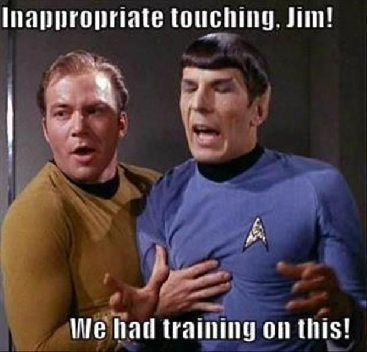

Hello!
I'm glad you are here, after all, it means you are interested in me!
I'm from China, as I was born in a City called Wuhan(a LOT of GREAT FOOD over there).
And I came to Canada alone when I was fifteen years old,
so I spent a lot of time with myself reading, watching movies and drawing.
(yes, I only started programming when I entered University)
Of course, in case you're interested, I'm an 🥑 🥑 🥑 INFJ 🥑 🥑 🥑.
Although I am a cs student, I have an immense passion for literature. Especially British medieval classics, as well as 80's science fiction.
🙌🏼 Here are some of my personal favourites.
📖 Books 🎬 Movies
East of Eden - John Steinbeck La La Land
The Martian Chronicles-Ray Bradbury Blade-Runner 2049
1984-George Orwell Star trek: AOS&TOS
Les Misérables-Victor Hugo Cloud Atlas
Stories Of Your Life-Ted Chiang
These reflections make me sometimes get lost in my thoughts from time to time.
Besides, I am also into Journaling, Camping, Violin and Gaming. I studied violin when I was 4, and this is now an unseparated part of my life. Even though I found other passions through my experience, violin would always be something that stuck deep inside me.
Besides all those interests, I've always tried to separate my hobby from my work, but I've gradually found a balance; combining my interests in painting, philosophical thought,
and literature with technology, design, and marketing has often produced an unexpected effect.
Well... Let's have my favourite quote from Star Trek as the ending of this page:
Space: the final frontier.
These are the voyages of the starship Enterprise.
Its five-year mission: to explore strange new worlds.
To seek out new life and new civilizations.
💫💫💫To boldly go where no man has gone before!💫💫💫